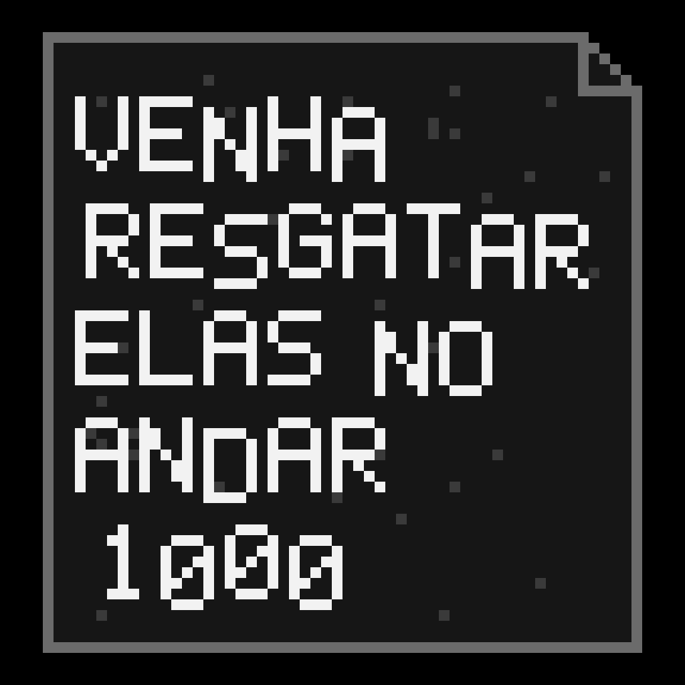

HISTÓRIA
Em um dia como os outros, fui a floresta pegar lenha para manter o estoque, mas quando volto
para casa vejo minha casa vazia, sem minha mulher e filha. Apenas um bilhete.

Após ler a carta, começo minha jornada de resgate até o andar 1000 da masmorra nas profundesas da cavernaBoring Dungeon
recursos
madeira
0
pedra
0